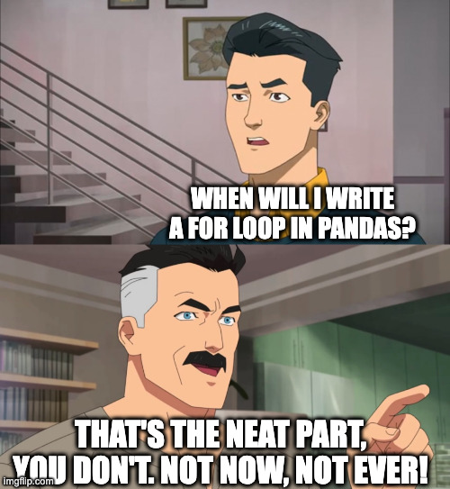
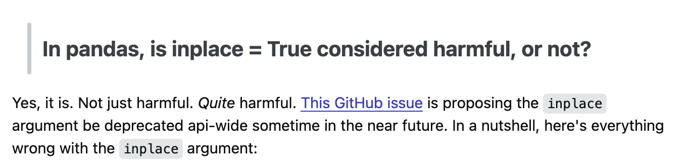

Alright! You apparently stumbled by accident on this page after wrongly clicking on the banner: “There are single people in your area”.
Well now, you have at least one chance to do something productive today! So put on your best nerd reading glasses and listen.
Today, you’re going to learn how to write pandas code that does not look like the experimentation of a toddler smashing on the keyboard because it prints stuff on the screen. You’re going to move one inch closer to the golden age of civilization. So buckle up, stop thinking for your own good, and read carefully!
Actually, before we even start with code… NO FUCKING FOR LOOPS!
- “But…”
- “Did I stutter? NO FUCKING FOR LOOPS”
- “But what if …”
- “You inept little twerp, are you trying to aggravate me from the start?”
Anyway, we will start with the usual suspects, and a stupid-ass dataframe:
import pandas as pd
import numpy as np
original_df = pd.DataFrame(
[
[1, 1, 1, "2024_01"],
[1, 2, 3, "2024_02"],
[5, 0, 1, "2024_03"],
],
columns=[0, 1, 3, "year_week"],
)Looks stupid enough? Good, I don’t want you distracted one bit by any type of complexity. Imagine you have been working on it. What you’re probably seeing in your average notebook probably looks a lot like the following. I am sure of it because I captured this in the wild:
The Original Sin Of Pandas
# fmt: off
weekly_chart_df = original_df.reset_index()
weekly_chart_df.rename(columns={0 : 'category_A', 1 : 'category_B', 3 : 'category_C'}, inplace=True)
weekly_chart_df.year_week = weekly_chart_df.year_week.astype(str)
weekly_chart_df['total_produced'] = weekly_chart_df.category_A + weekly_chart_df.category_B + weekly_chart_df.category_C # total number of produced goods
weekly_chart_df['total_tested'] = weekly_chart_df.category_B + weekly_chart_df.category_C # total number of tested goods
weekly_chart_df['prop_tested'] = np.round(weekly_chart_df.total_tested / weekly_chart_df.total_produced *100,2) # proportion of goods tested
weekly_chart_df['prop_category_B'] = np.round(weekly_chart_df.category_B / weekly_chart_df.total_produced *100,2) # proportion of category_B
weekly_chart_df['prop_category_C'] = np.round(weekly_chart_df.category_C / weekly_chart_df.total_produced *100,2) # proportion of category_C
weekly_chart_df = weekly_chart_df[weekly_chart_df["total_tested"] < 5]
# fmt: on# fmt: off
df = original_df.reset_index()
df.rename(columns={0 : 'category_A', 1 : 'category_B', 3 : 'category_C'}, inplace=True)
df.year_week = df.year_week.astype(str)
df['total_produced'] = df.category_A + df.category_B + df.category_C # total number of produced goods
df['total_tested'] = df.category_B + df.category_C # total number of tested goods
df['prop_tested'] = np.round(df.total_tested / df.total_produced *100,2) # proportion of goods tested
df['prop_category_B'] = np.round(df.category_B / df.total_produced *100,2) # proportion of category_B
df['prop_category_C'] = np.round(df.category_C / df.total_produced *100,2) # proportion of category_C
df = df[df["total_tested"] < 5]
weekly_chart_df = df
# fmt: onLooks familiar? Do you feel this conundrum where either your names are long and things are a pain to write? Or you abuse the ignominious df name all over the place and everything is called the same?
Well, I am sorry to tell you that both examples up there are pure garbage! Actually, I am not even sorry. This stuff has been vomited by someone without any consideration for their fellow humans. You don’t believe me?
Did you by any chance happen to notice the little cabalistic signs around the code: fmt: off / fmt: on? Do you know what it means? It means I have to purposefully block my formatter from touching this pile of intellectual dump, otherwise, it becomes so unreadable that its ungodly nature becomes clear to all. Let me prove it to you:
weekly_chart_df = original_df.reset_index()
weekly_chart_df.rename(
columns={0: "category_A", 1: "category_B", 3: "category_C"}, inplace=True
)
weekly_chart_df.year_week = weekly_chart_df.year_week.astype(str)
weekly_chart_df["total_produced"] = (
weekly_chart_df.category_A
+ weekly_chart_df.category_B
+ weekly_chart_df.category_C
) # total number of produced goods is the lot
weekly_chart_df["total_tested"] = (
weekly_chart_df.category_B + weekly_chart_df.category_C
) # total number of tested goods is the lot
weekly_chart_df["prop_tested"] = np.round(
weekly_chart_df.total_tested / weekly_chart_df.total_produced * 100, 2
) # proportion of goods tested on the lot
weekly_chart_df["prop_category_B"] = np.round(
weekly_chart_df.category_B / weekly_chart_df.total_produced * 100, 2
) # proportion of category_B in the lot
weekly_chart_df["prop_category_C"] = np.round(
weekly_chart_df.category_C / weekly_chart_df.total_produced * 100, 2
) # proportion of category_C in the lot
weekly_chart_df = weekly_chart_df[weekly_chart_df["total_tested"] < 5]Understood? Now that the pretended pseudo-manual structure is gone, there is nothing left but chaos? So do yourself a favor, just install ruff or black, because if you write something, format it, and it looks worse, there is a 99.999% chance that what you wrote should be covered with Napalm and set on fire.
Now that we agree on the horror it actually is, it is time to fix it.
How To See The Light In Darkness
First, you’re going to remove ALL inplace=True from your whole code base! Did I stutter? I said all of them! This wretched abomination should have never seen the sunlight:

Unfortunately, pandas is almost 20 years old, and mistakes were made during the young years. Sadly enough, this mistake still haunts us to this day because some people are clearly not able to perform a simple Google search. We are still stuck with this because removing it would break half of the world’s code bases, because of people like you. People who think they are being clever, when in fact they’re just performing a major enshittification of the code at a large scale.
No inplace=True EVER! I mean it!
So, the first line becomes:
weekly_chart_df = original_df.reset_index().rename(
columns={0: "category_A", 1: "category_B", 3: "category_C"}
)See? It’s not beautiful yet but it is certainly a step in the right direction?
The next thing you will do is transform the astype call to use it at the dataframe level, in the shape: astype({"column": <type>}), because we are not beasts. Not so goddamn fast you inconsequential stardust residue! I am sure you were about to type something ludicrous like:
p_chart_weekly = p_chart_weekly.astype({"year_week": str})You, you’re trying to make me mad, aren’t you? Put that shit with the previous calls, and lose the name of the dataframe you don’t need it.
weekly_chart_df = original_df.reset_index().rename(
columns={0: "category_A", 1: "category_B", 3: "category_C"}
).astype({"year_week": str})See this shit? This is called method chaining, now repeat after me: method chaining. This is the sacred beauty that was sent upon us mere mortals to allow writing data transformations that do not look like complete crap. You will only write your pandas this way from now on! Did you hear me? And I will show you later how other languages have managed to do way better than Python and pandas in that regard. And these people were rightfully laughing at your clown ass, when you were happy writing some stupid shit like df = df.some_fucking_transformation Do you start to understand? This is why I forbade your sorry brain to ever use the option inplace=True, because it breaks the… you’re goddamn right, method chaining!
From this point, you are one keyboard shortcut away from poetry. You don’t believe me? Did you install an automatic code formatter as I so generously told you earlier? You, infected chromosomal deficiency! Ok, it appears you need another round of scolding. You need a formatter like ruff or black because your inept brain will not be able to remain consistent to format your whole project in a standard way. You don’t want to waste any part of your limited brain power on stupid shit like this. Just use the goddamn tools! Some talented person might pretend: “It looks prettier when I do it myself, and I manage to remain completely consistent across my whole project”, but you are not some person…
weekly_chart_df = (
original_df.reset_index()
.rename(columns={0: "category_A", 1: "category_B", 3: "category_C"})
.astype({"year_week": str})
)See how beautiful this is? Now you’re starting to believe. Ok, it’s time to introduce you to a concept you have never encountered: (). Those are called parentheses, and they are your new best friend!
Whenever you want to write a transformation, BEFORE you even type the name of your stupid dataframe, which is probably stupid df anyway, the absolute FIRST THING you will do is open a pair of parentheses. Why? Because each time you’re done with one call for a transformation, you can just press enter, the code will auto-indent, and you can continue whatever sorry exploration you’re attempting. Is it so much better than your typical awful backslashes, don’t lie, I know you have been abusing them…
(
data
.transformation_1()
.filtering()
.create_columns()
.groupby()
.agg()
)Understood? Good!
Take-Home Messages For Dummies
- NO FUCKING FOR LOOPS!
- Never use
inplace=True. Only morons do so! - Do not use backslashes
\like a caveman. Just use a pair of brackets(), type the name of your dataframe, and pressEnter.
If you do not follow these simple rules, I will find you, and I will unscrew your head. I will go out of my way to attack you. Even if your dead ass is sitting in the middle of the ocean, I will swim out into the middle of the ocean and friggin eat you! And then, I will bang your tuna boyfriend/girlfriend.
Inside of a chain, you can often reference your current dataframe inside a
lambdaexpression.- Perfect for creating new columns with
assign(). - It works really well with
loc[]to filter rows on the fly. - There are other methods that accept this too.
- Perfect for creating new columns with
There is a special place in hell for people who use methods that evaluate generic strings like
.query(). A special place! Right next to child molesters and people who talk during movies!How long can you even chain?
The R wizards tell us: “You can generally chain 5 to 10 transformation steps”. Beyond that, there is a higher risk for code to become less readable and more convoluted. Then you can just save the result in a nicely named variable describing exactly what your data is representing! Some person says you can do more without tampering with readability, I disagree, and then again, you are not some person…
That’s it for today. We will see more advance shit later. For now, I need to go choke on a bottle of Xanax!
Disclaimer
This rant was largely inspired by an awesome guide for Metal Gear Rising: Revengeance by Vesperas. Its reading was a great source of banter and chuckles. My dear swearing fellow, you have my most sincere gratitude for helping a sucker like me progress at such a great game!